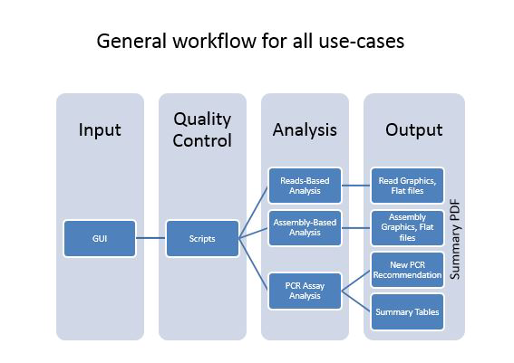

<!DOCTYPE html>
<html class="ui-mobile"><head><meta http-equiv="Content-Type" content="text/html; charset=UTF-8">
	<meta charset="utf-8">
	<meta name="viewport" content="width=device-width, initial-scale=1,maximum-scale=1, user-scalable=no">
	<title>EDGE bioinformatics</title>
	<link href='http://fonts.googleapis.com/css?family=Open+Sans:300,400,600,700' rel='stylesheet' type='text/css'>
	<link rel="shortcut icon" href="images/edge.ico" type="image/x-icon">
	<link rel="icon" href="images/edge.ico" type="image/x-icon">
	<link rel="stylesheet" href="css/edge-theme.min.css" />
	<link rel="stylesheet" href="css/jquery.mobile.icons.min.css" />
	<link rel="stylesheet" href="css/jquery.mobile.1.4.3.min.css" />
	<link rel="stylesheet" href="css/jqueryFileTree.css" />
	<link rel="stylesheet" href="css/edge.css"/>
	<link rel='stylesheet' href='css/edge-output.css'/>
	<link rel='stylesheet' href='css/tooltipster.css'/>
	<link rel="stylesheet" href="css/jquery.lazyloadxt.spinner.min.css">

	<script src="javascript/jquery.js"></script>
	<script src="javascript/jquery.mobile-1.4.3.min.js"></script>
	<script src="javascript/edge.js"></script>
	<script src="javascript/jqueryFileTree.js"></script>
	<script src="javascript/raphael-min.js" ></script>
	<script src="javascript/jsphylosvg-min.js"></script>
	<script src="javascript/jquery.tooltipster.min.js"></script>
	<script src="javascript/jquery.lazyloadxt.extra.min.js"></script>
</head>

<body class="ui-mobile-viewport ui-push-a">

<div data-role="page" class="edge-demos edge-home ui-page ui-page-theme-a ui-page-footer-fixed ui-page-active" data-url="" tabindex="0" style="padding-bottom: 82px;">
<form id="edge-run-pipeline-form">

	<div data-role="header" class="edge-header ui-header ui-bar-inherit">
		<div class="edge-logo">
			
			<h2 class="ui-title" role="heading" aria-level="1">EDGE bioinformatics</h2>
		</div>
		<a href="" class="edge-navmenu-link ui-nodisc-icon ui-btn-left ui-btn ui-icon-bars ui-btn-icon-notext ui-corner-all" data-role="button" role="button">Menu</a>
		<a href="" class="edge-action-link ui-nodisc-icon ui-btn-right ui-btn ui-icon-action ui-btn-icon-notext ui-corner-all" data-role="button" role="button">Action</a>
	</div><!-- /header -->

	<div data-role="panel" class="edge-navmenu-panel ui-panel ui-panel-position-left ui-panel-animate ui-panel-closed" data-position="left" data-display="overlay" data-theme="a">
		<div class="ui-panel-inner"><ul class="edge-list ui-alt-icon ui-nodisc-icon ui-listview">
			<li class="ui-first-child"><a href="#edge-content-home" class="ui-btn ui-btn-icon-right ui-icon-home">Home</a></li>
			<li><a href="#edge-content-pipeline" class="ui-btn ui-btn-icon-right ui-icon-carat-r">Run EDGE</a></li>
			<li data-role="collapsible" data-enhanced="true" data-collapsed-icon="carat-d" data-expanded-icon="carat-u" data-iconpos="right" data-inset="false" class="ui-collapsible ui-collapsible-themed-content ui-collapsible-collapsed ui-li-static ui-body-inherit">
				<h3 class="ui-collapsible-heading ui-collapsible-heading-collapsed">
				<a href="" class="ui-collapsible-heading-toggle ui-btn ui-btn-icon-right ui-btn-inherit ui-icon-carat-d">
					Projects<span class="ui-collapsible-heading-status">click to expand contents</span>
				</a>
				</h3>
				<div class="ui-collapsible-content ui-body-inherit ui-collapsible-content-collapsed" aria-hidden="true">
				<ul class="ui-listview" id="edge-project-list-ul">
					<li class='edge-proj-list-li'><a href='#' class='edge-project-list ui-btn ui-btn-icon-right ui-icon-check'>No project found</a></li>
				</ul>
				</div>
			</li>
		</ul></div>
	</div><!-- /nav panel -->

	<div data-role="panel" class="edge-action-panel ui-panel ui-panel-position-right ui-panel-animate" data-position="right" data-display="overlay" data-theme="b">
		<div class="ui-panel-inner">
			<p>Job Progress
			<ul data-role="listview" data-inset="true" id="edge-progress-ul">
				<li data-role='list-divider'>No project loaded</li>
				<li data-role='list-divider' class='edge-proj-last-check'>Last check: Not available</li>
			</ul>
			</p>

			<ul data-role="listview" id="resource-usage" data-inset="true">
				<li data-role='list-divider'>EDGE Server Usage</li>
				<li class="ui-btn"><span class="res-type">CPU</span><input type="range"  id="cpu-usage-bar" data-highlight="true" min="0" max="100" value="0"><span id="cpu-usage-val"></span></li>
				<li class="ui-btn"><span class="res-type">MEM</span><input type="range"  id="mem-usage-bar" data-highlight="true" min="0" max="100" value="0"><span id="mem-usage-val"></span></li>
				<li class="ui-btn"><span class="res-type">DISK</span><input type="range" id="disk-usage-bar" data-highlight="true" min="0" max="100" value="0"><span id="disk-usage-val"></span></li>
			</ul>

			<ul data-role="listview" data-inset="true">
				<li data-role='list-divider'>Action</li>
				<li data-icon='bars'>     <a href='#edge_log_dialog' id='edge-view-log-btn' aria-haspopup='true' data-rel='popup' data-position-to='window' datadata-transition='pop' class='edge-icon-bg-grey'>View live log</a>
				<li data-icon='refresh'>  <a href='#edge_confirm_dialog' id='action-rerun-btn' aria-haspopup='true' data-rel='popup' data-position-to='window' datadata-transition='pop' class='edge-icon-bg-grey' data='rerun'>Force to rerun this project</a>
				<li data-icon='forbidden'><a href='#edge_confirm_dialog' id='action-interrupt-btn' aria-haspopup='true' data-rel='popup' data-position-to='window' datadata-transition='pop' class='edge-icon-bg-grey' data='interrupt'>Interrupt running project</a>
				<li data-icon='delete'>   <a href='#edge_confirm_dialog' id='action-delete-btn' aria-haspopup='true' data-rel='popup' data-position-to='window' datadata-transition='pop' class='edge-icon-bg-grey' data='delete'>Delete entire project</a>
				<li data-icon='minus'>   <a href='#edge_confirm_dialog' id='action-delete-btn' aria-haspopup='true' data-rel='popup' data-position-to='window' datadata-transition='pop' class='edge-icon-bg-grey' data='remove'>Remove from project list</a>
				<li data-icon='recycle'>   <a href='#edge_confirm_dialog' id='action-delete-btn' aria-haspopup='true' data-rel='popup' data-position-to='window' datadata-transition='pop' class='edge-icon-bg-grey' data='empty'>Empty project outputs</a>
				<li data-icon='arrow-u-r'><a href='#edge_confirm_dialog' id='action-archive-btn' aria-haspopup='true' data-rel='popup' data-position-to='window' datadata-transition='pop' class='edge-icon-bg-grey' data='archive'>Move to the archive storage</a>
			</ul>
		</div>
	</div><!-- /progress panel -->

	<div role="main" id="edge-content-home" class="ui-content edge-content edge-main-page">
		<h2><u>E</u>mpowering the <u>D</u>evelopment of <u>G</u>enomics <u>E</u>xpertise</h2>
		<p>
			<ul>
			<li>No need for high-level bioinformaticists at the site of sequencing.</li>
			<li>No need to move large datasets.</li>
			<li>Edge Bioinformatics enables sequencing as a solution in the biological facilities where human-resources, space, bandwidth, and time are limited</li>
			<li>A highly adaptable bioinformatics platform that allows laboratories to quickly analyze and interpret genomic sequence data.</li>
			<li>Allow users to address a wide range of use cases including assay validataion and the characterization of novel biological threats, clinical samples, and complex environmental samples.</li>
			</ul>
			<div class="edge-center"><a href="#popup-workflow" data-transition="fade" data-rel="popup" data-position-to="window"></a></div>
			<div data-role="popup" id="popup-workflow" class="photopopup" data-overlay-theme="a" data-corners="false" data-tolerance="30,15">
				<a href="#" data-rel="back" class="ui-btn ui-corner-all ui-shadow ui-btn-a ui-icon-delete ui-btn-icon-notext ui-btn-right">Close</a>
				<a href="#" data-rel="back">
				
				</a>
			</div>
		</p>
		<h2>Implementation</h2>
		<p>
			<ul>
			<li>EDGE pipeline was implemented in Perl and wraps up several existing tools within the package including a cutting-edge assembler and sequencing reads aligners.</li>
			<li>The User Interface was mainly implemented in <a href="http://jquerymobile.com">JQuery Mobile</a>, which is a HTML5-based user interface system designed to make responsive web sites and apps that are accessible on all smartphone, tablet and desktop devices.</li> 
			<li>The current version of EDGE pipeline has been extensively tested on a Linux Server with Ubuntu 13.04 operation system and will only work on 64bit Linux environments.</li>
			<li>Due to the involvement of several memory/time consuming steps, it requires at least 16Gb memory and at least 8 computing CPUs. A higher computer spec is recommended: 128Gb memory and 16 computing CPUs.</li>
			</ul>
		</p>
		<h2>Source Code</h2>
		<p>
			<a href="http://lanl-bioinformatics.github.io/edge/" target="_blank">GitHub</a>
		</p>
		<h2>Documentation</h2>
		<p>
			<a href="http://edge.readthedocs.org/en/latest/" target="_blank">http://edge.readthedocs.org/en/latest/</a>
		</p>
	</div><!-- /home -->

	<div role='main' id='edge-content-report' class='ui-content edge-content edge-output edge-main-page'>
	</div><!-- /output -->

	<div role="main" id="edge-content-pipeline" class="ui-content edge-content edge-main-page">
		<h2>Input Your Sample</h2>
		<p>EDGE requires sequence data files in FASTQ format. EDGE allows both paired-end and single-end sequences.</p>
		<div data-role="collapsible-set">
			<div data-role="collapsible" id="edge-input-sequence" data-collapsed-icon="carat-d" data-expanded-icon="carat-u" data-collapsed="false">
				<h4>Input Sequence</h4>

				<div class="ui-body-d ui-content">
					<div class="ui-field-contain">
						<label for="edge-proj-name">Project name</label>
						<input type="text" data-mini="true" data-clear-btn="false" name="edge-proj-name" id="edge-proj-name" placeholder="(required)"></div>
				
					<p class="edge-center">Paired-end reads:</p>
					<div id="edge-input-pe-block1" class="edge-input-pe-block"> 
					<div class="ui-field-contain input-type-file">
						<label for="edge-input-pe1-1">Pair-1 FASTQ file</label>
						<input type="text" data-mini="true" name="edge-input-pe1[]" id="edge-input-pe1-1" placeholder="absolute file path">
						<div class="edge-file-selector"><a href='#edge_file_dialog' aria-haspopup='true' data-rel='popup' data-position-to='window' datadata-transition='pop' data-mini="true" class="ui-btn ui-shadow ui-corner-all ui-icon-bullets ui-btn-icon-notext">file</a></div>
					</div>
					<div class="ui-field-contain input-type-file">
						<label for="edge-input-pe2-1">Pair-2 FASTQ file</label>
						<input type="text" data-mini="true" name="edge-input-pe2[]" id="edge-input-pe2-1" placeholder="absolute file path">
						<div class="edge-file-selector"><a href='#edge_file_dialog' aria-haspopup='true' data-rel='popup' data-position-to='window' datadata-transition='pop' data-mini="true" class="ui-btn ui-shadow ui-corner-all ui-icon-bullets ui-btn-icon-notext">file</a>
						<a href="#" class="btnDel-edge-input-pe" data-role="button" data-icon="delete" data-iconpos="notext">Delete</a>
						</div>
					</div>
					</div>

					<p class="edge-center">and/or</p>
				
					<div id="edge-input-se-block1" class="ui-field-contain input-type-file edge-input-se-block">
						<label for="edge-input-se1">Single-end FASTQ file</label>
						<input data-mini="true" type="text" name="edge-input-se[]" id="edge-input-se1" placeholder="absolute file path">
						<div class="edge-file-selector"><a href='#edge_file_dialog' aria-haspopup='true' data-rel='popup' data-position-to='window' datadata-transition='pop' data-mini="true" class="ui-btn ui-shadow ui-corner-all ui-icon-bullets ui-btn-icon-notext">file</a>
						<a href="#" class="btnDel-edge-input-se" data-role="button" data-icon="delete" data-iconpos="notext">Delete</a>
						</div>	
					</div>
				
					<div class="edge-right">|<a href="#" id="edge-input-toggle"> additional options </a>|</div>

					<div id="edge-input-options">
						<div class="ui-field-contain btnAdd-edge-input">
							<a href="#" id="btnAdd-edge-input-pe" data-theme="b" data-role="button" data-inline="true" data-mini="true" data-icon="plus" data-iconpos="right" >Add Paired-end Input</a>
							<a href="#" id="btnAdd-edge-input-se" data-theme="b" data-role="button" data-inline="true" data-mini="true" data-icon="plus" data-iconpos="right" >Add Single-end Input</a>
						</div>
						<div class="ui-field-contain">
							<label for="edge-proj-desc">Description</label>
							<input type="text" data-mini="true" data-clear-btn="false" name="edge-proj-desc" id="edge-proj-desc" placeholder="(optional)"></div>
						<div class="ui-field-contain">
							<label for="edge-proj-outpath">Specify Output Path</label>
							<input type="text" data-mini="true" data-clear-btn="false" name="edge-proj-outpath" id="edge-proj-outpath" placeholder="(optional)"></div>
						<!--<p class="edge-center">or</p>
						<div class="ui-field-contain">
							<fieldset data-role="controlgroup" data-mini="true" data-type="horizontal">
								<legend>Store to Input Directory</legend>
								<label for="edge-proj-outpath-input">Store to Input Directory</label>
								<input type="radio" data-mini="true" name="edge-proj-outpath-input" id="edge-proj-outpath-input1" value="1" checked="checked">
								<label for="edge-proj-outpath-input1">Yes</label>
								<input type="radio" data-mini="true" name="edge-proj-outpath-input" id="edge-proj-outpath-input2" value="0">
								<label for="edge-proj-outpath-input2">No</label>
							</fieldset>
						</div>-->

						<div class="ui-field-contain">
							<label for="edge-proj-desc">Use # of CPUs</label>
							<input type="text" data-mini="true" data-clear-btn="false" name="edge-proj-cpu" id="edge-proj-cpu" value="%DEFAULT_CPU%"></div>

						<div class="ui-field-contain input-type-file">
							<label for="edge-input-config">Config file</label>
							<input data-mini="true" type="text" name="edge-input-config" id="edge-input-config" placeholder="(optional) absolute file path">
							<div class="edge-file-selector"><a href='#edge_file_dialog' aria-haspopup='true' data-rel='popup' data-position-to='window' datadata-transition='pop' data-mini="true" class="ui-btn ui-shadow ui-corner-all ui-icon-bullets ui-btn-icon-notext">file</a></div>
						</div>
						<p class="edge_tool_note">Your customized parameters can be used again. You can utilize the file selector above to upload a standard config file generated by EDGE bioinformatics.</p>
					</div>
				</div>
			</div>
			<div id="edge-batch-input" data-role="collapsible" data-collapsed-icon="carat-d" data-expanded-icon="carat-u" data-collapsed="true">
				<h4>Batch project submit</h4>
				<p class="edge_tool_note">Run EDGE with Multiple projects using a tools set configuration. Click <a href="#" id="edge-batch-sample-input">[Sample Input]</a> to see the example. </p>
					<div class="ui-field-contain input-type-file">
						<label for="edge-batch-file-input">Batch text file</label>
						<input type="file" id="edge-batch-file-input" name="edge-batch-file-input">
					</div>
					<p class="edge-center">or enter your batch sample descriptions here</p>
					<div data-role="fieldcontain" >
						<label for="edge-batch-text-input">Batch sample input:</label>
						<textarea name="edge-batch-text-input" id="edge-batch-text-input"></textarea>
						<!--<a href="#" id="edge-batch-sample-input">[Sample Input]</a>  --!>
					</div>
			</div>
		</div>
		<p></p>
		<h2>Choose Processes / Analyses</h2>
		<p>EDGE provides many modules to do various analyses. You can choose to run or skip a specific process. Parameters/options are provided for most of the analyses.
		   You can click here to
		   <a href="#" id="edge-all-on-btn">turn all on</a>,
		   <a href="#" id="edge-all-exp-btn">expand all sections</a> or
		   <a href="#" id="edge-all-close-btn">close all sections</a>.
		</p>
		<div data-role="collapsible" data-collapsed-icon="carat-d" data-expanded-icon="carat-u">
			<h4>
				<div class="ui-field-contain edge-collapsible-options">
					<select id="edge-qc-sw" name="edge-qc-sw" data-role="slider" data-mini="true">
						<option value="0">Off</option><option value="1" selected="TRUE">On</option>
					</select>
					<label for="edge-qc-sw">Quality Trim and Filter</label>
				</div>
			</h4>

			<div class="ui-field-contain">
				<label for="edge-qc-q">Trim Quality Level</label>
				<input type="number" name="edge-qc-q" id="edge-qc-q" data-mini="true" data-clear-btn="true" value="5">
			</div>
			<div class="ui-field-contain">
				<label for="edge-qc-avgq">Average Quality Cutoff</label>
				<input type="number" name="edge-qc-avgq" id="edge-qc-avgq" data-mini="true" data-clear-btn="true" value="0">
			</div>
			<div class="ui-field-contain">
				<label for="edge-qc-minl">Minimum Read Length</label>
				<input type="number" name="edge-qc-minl" id="edge-qc-minl" data-mini="true" data-clear-btn="true" value="50">
			</div>
			<div class="ui-field-contain">
				<label for="edge-qc-n">"N" Base Cutoff</label>
				<input type="number" name="edge-qc-n" id="edge-qc-n" data-mini="true" data-clear-btn="true" value="0">
			</div>
			<div class="ui-field-contain">
				<label for="edge-qc-lc">Low Complexity Filter Ratio</label>
				<input type="range" name="edge-qc-lc" id="edge-qc-lc" data-mini="true" data-highlight="true" min="0.0" max="1.0" value="0.85" step=".01">
			</div>
			<div class="ui-field-contain input-type-file">
				<label for="edge-qc-adapter">Adapter FASTA</label>
				<input data-mini="true" name="edge-qc-adapter" id="edge-qc-adapter" type="text" placeholder="(optional) absolute file path">
				<div class="edge-file-selector"><a href='#edge_file_dialog' aria-haspopup='true' data-rel='popup' data-position-to='window' datadata-transition='pop' data-mini="true" class="ui-btn ui-shadow ui-corner-all ui-icon-bullets ui-btn-icon-notext">file</a></div>
			</div>
			<!--<div class="ui-field-contain">
				<fieldset data-role="controlgroup" data-mini="true" data-type="horizontal">
					<legend>phiX Filter</legend>
					<input type="radio" data-mini="true" name="edge-qc-phix" id="edge-qc-phix1" value="1">
					<label for="edge-qc-phix1">On</label>
					<input type="radio" data-mini="true" name="edge-qc-phix" id="edge-qc-phix2" value="0" checked="checked">
					<label for="edge-qc-phix2">Off</label>
				</fieldset>
			</diav>-->
			<div class="ui-field-contain">
				<label for="edge-qc-5end">Cut #bp from 5'-end</label>
				<input type="number" name="edge-qc-5end" id="edge-qc-5end" data-mini="true" data-clear-btn="true" value="0">
			</div>
			<div class="ui-field-contain">
				<label for="edge-qc-3end">Cut #bp from 3'-end</label>
				<input type="number" name="edge-qc-3end" id="edge-qc-3end" data-mini="true" data-clear-btn="true" value="0">
			</div>
		</div>
		<div data-role="collapsible" data-collapsed-icon="carat-d" data-expanded-icon="carat-u">
			<h4>
				<div class="ui-field-contain edge-collapsible-options">
					<select id="edge-hostrm-sw" name="edge-hostrm-sw" data-role="slider" data-mini="true">
						<option value="0">Off</option><option value="1">On</option>
					</select><label for="edge-hostrm-sw">Host Removal</label>
				</div>
			</h4>
			<div class="ui-field-contain input-type-file">
				<label for="edge-hostrm-file-fromlist">Select From List</label>
				<select id="edge-hostrm-file-fromlist" data-mini="true" name="edge-hostrm-file-fromlist" data-native-menu="false" multiple="multiple">
					<option disabled>Select a Host Genome...</option>
				</select>
			</div>
			<p class="edge-center">and/or</p>
			<div class="ui-field-contain input-type-file">
				<label for="edge-hostrm-file">Host FASTA file</label>
				<input type="text" name="edge-hostrm-file" id="edge-hostrm-file" data-mini="true" placeholder="absolute file path">
				<div class="edge-file-selector"><a href='#edge_file_dialog' aria-haspopup='true' data-rel='popup' data-position-to='window' datadata-transition='pop' data-mini="true" class="ui-btn ui-shadow ui-corner-all ui-icon-bullets ui-btn-icon-notext">file</a></div>
			</div>
			<div class="ui-field-contain">
				<label for="edge-hostrm-minlen">Similarity (%)</label>
				<input type="number" name="edge-hostrm-minlen" id="edge-hostrm-similarity" data-mini="true" data-clear-btn="true" value="90">
			</div>
			<!--
			<div class="ui-field-contain">
				<label for="edge-hostrm-minlen">Minimum Alignment Length</label>
				<input type="number" name="edge-hostrm-minlen" id="edge-hostrm-minlen" data-mini="true" data-clear-btn="true" value="50">
			</div>
			-->
		</div>
		<div data-role="collapsible" data-collapsed-icon="carat-d" data-expanded-icon="carat-u">
			<h4>
				<div class="ui-field-contain edge-collapsible-options">
					<select id="edge-assembly-sw" name="edge-assembly-sw" data-role="slider" data-mini="true">
						<option value="0">Off</option><option value="1" selected="TRUE">On</option>
					</select>
					<label for="edge-assembly-sw">Assembly</label>
				</div>
			</h4>
			<p class="edge_tool_note">EDGE performs iterative kmers de novo assembly by IDBA-UD. It performs well on isolates as well as metagenomes but it may not work well on very large genomes.</p>
			<div class="ui-field-contain"><label for="edge-assembly-mink">Minimum Kmer Length</label><input type="number" data-mini="true" data-clear-btn="true" name="edge-assembly-mink" id="edge-assembly-mink" value="31"></div>
			<div class="ui-field-contain"><label for="edge-assembly-maxk">Maximum Kmer Length</label><input type="number" data-mini="true" data-clear-btn="true" name="edge-assembly-maxk" id="edge-assembly-maxk" value="124"></div>
			<div class="ui-field-contain"><label for="edge-assembly-step">Step Size</label><input type="number" data-mini="true" data-clear-btn="true" name="edge-assembly-step" id="edge-assembly-step" value="20"></div>
			<div class="ui-field-contain"><label for="edge-assembly-minc">Minimum Contig Length</label><input type="number" data-mini="true" data-clear-btn="true" name="edge-assembly-minc" id="edge-assembly-minc" value="200"></div>
			<div class="ui-field-contain">
				<fieldset data-role="controlgroup" data-mini="true" data-type="horizontal">
					<legend>Annotation</legend>
					<input type="radio" data-mini="true" name="edge-anno-sw" id="edge-anno-sw1" value="1" checked="checked">
					<label for="edge-anno-sw1">Yes</label>
					<input type="radio" data-mini="true" name="edge-anno-sw" id="edge-anno-sw2" value="0">
					<label for="edge-anno-sw2">No</label>
				</fieldset>
			</div>
			<div class="ui-field-contain">
			<fieldset data-role="controlgroup" data-mini="true" data-type="horizontal">
				<legend>Specify Kingdom</legend>
				<input type="radio" name="edge-anno-kingdom" id="edge-anno-kingdom1" value="Archaea">
				<label for="edge-anno-kingdom1">Archaea</label>
				<input type="radio" name="edge-anno-kingdom" id="edge-anno-kingdom2" value="Bacteria" checked="checked">
				<label for="edge-anno-kingdom2">Bacteria</label>
				<input type="radio" name="edge-anno-kingdom" id="edge-anno-kingdom3" value="Mitochondria">
				<label for="edge-anno-kingdom3">Mitochondria</label>
				<input type="radio" name="edge-anno-kingdom" id="edge-anno-kingdom4" value="Viruses">
				<label for="edge-anno-kingdom4">Viruses</label>
				<input type="radio" name="edge-anno-kingdom" id="edge-anno-kingdom5" value="Others">
				<label for="edge-anno-kingdom5">Others</label>
			</fieldset>
			</div>
			<p class="edge_tool_note">Please choose the genome type you would like to annotate. EDGE will use Prokka to do genome annotation. If your input is a viral genome with the reference annotation (Genbank file), EDGE will try to use RATT to transfer the annotation from the reference genome.</p>
		</div>

		<div data-role="collapsible" data-collapsed-icon="carat-d" data-expanded-icon="carat-u">
			<h4>
				<div class="ui-field-contain edge-collapsible-options">
					<select id="edge-taxa-sw" name="edge-taxa-sw" data-role="slider" data-mini="true">
						<option value="0">Off</option><option value="1" selected="TRUE">On</option>
					</select>
					<label for="edge-taxa-sw">Community Profiling</label>
				</div>
			</h4>
			<p class="edge_tool_note">EDGE will use reads that are unmapped to the reference by default if Reference-based Analysis is on. You can turn on the option above to force EDGE to use all reads.</p>
			<div class="ui-field-contain">
				<fieldset data-role="controlgroup" data-mini="true" data-type="horizontal">
					<legend>Always use all reads</legend>
					<input type="radio" data-mini="true" name="edge-taxa-allreads" id="edge-taxa-allreads1" value="1">
					<label for="edge-taxa-allreads1">Yes</label>
					<input type="radio" data-mini="true" name="edge-taxa-allreads" id="edge-taxa-allreads2" value="0" checked="checked">
					<label for="edge-taxa-allreads2">No</label>
				</fieldset>
			</div>
			<p class="edge_tool_note">EDGE uses multiple tools for taxonomy classification including GOTTCHA (bacterial & viral databases), MetaPhlAn, MetaPhyler (short read version), Kraken, MetaScope and reads mapping to NCBI RefSeq using BWA.</p>
			<div class="ui-field-contain" id="edge-taxa-tool-select">
				<fieldset data-role="controlgroup" data-mini="true" data-type="horizontal">
					<legend>Profiling Tools</legend>
					<label for="edge-taxa-enabled-tools" class="select">Run with following databases</label>
					<select name="edge-taxa-enabled-tools" id="edge-taxa-enabled-tools" multiple="multiple" data-mini="true" data-native-menu="false" data-icon="grid" data-iconpos="right">
						<option>Choose Profiling Tools:</option>
						<optgroup label="GOTTCHA Bacterial Databases">
							<option value="gottcha-genDB-b" selected=""> GOTTCHA Genus</option>
							<option value="gottcha-speDB-b" selected=""> GOTTCHA Species </option>
							<option value="gottcha-strDB-b" selected=""> GOTTCHA Strain</option>
						</optgroup>
						<optgroup label="GOTTCHA Viral Databases">
							<option value="gottcha-genDB-v" selected=""> GOTTCHA Genus</option>
							<option value="gottcha-speDB-v" selected=""> GOTTCHA Species</option>
							<option value="gottcha-strDB-v" selected=""> GOTTCHA Strain</option>
						</optgroup>
						<optgroup label="Reads Mapping">
							<option value="bwa," selected="">Reads Mapping (BWA against RefSeq)</option>
						</optgroup>
						<optgroup label="Other Tools">
							<option value="metaphlan" selected="">MetaPhlAn</option>
							<option value="kraken_mini" selected="">Kraken (mini database)</option>
							<option value="metaphyler-srv" selected="">Metaphyler (Short Read Version)</option>
							<option value="metascope" disabled>MetaScope</option>
						</optgroup>
					</select>
				</fieldset>
			</div>
		</div>

		<div data-role="collapsible" data-collapsed-icon="carat-d" data-expanded-icon="carat-u">
			<h4>
				<div class="ui-field-contain edge-collapsible-options">
					<select id="edge-ref-sw" name="edge-ref-sw" data-role="slider" data-mini="true">
						<option value="0">Off</option><option value="1">On</option>
					</select>
					<label for="edge-ref-sw">Reference-based Analysis</label>
				</div>
			</h4>
			<div class="ui-field-contain input-type-file">
				<label for="edge-ref-file-fromlist">Select From List</label>
				<select id="edge-ref-file-fromlist" data-mini="true" name="edge-ref-file-fromlist" data-native-menu="false" multiple="multiple">
					<option disabled>Select a Reference Genome...</option>
				</select>
			</div>
			<p class="edge-center">and/or</p>
			<div class="ui-field-contain input-type-file">
				<label for="edge-ref-file">Reference genome</label>
				<input type="text" data-mini="true" name="edge-ref-file" id="edge-ref-file" placeholder="absolute file path">
				<div class="edge-file-selector"><a href='#edge_file_dialog' aria-haspopup='true' data-rel='popup' data-position-to='window' datadata-transition='pop' data-mini="true" class="ui-btn ui-shadow ui-corner-all ui-icon-bullets ui-btn-icon-notext">file</a></div>
			</div>
			<p class="edge_tool_note">Given a reference genome fasta file, EDGE will turn on the analysis of the reads/contigs mapping to reference and JBrowse reference track generation. Given a reference genome genbank file, EDGE will also turn on variant analysis.</p>
		</div>

		<div data-role="collapsible" data-collapsed-icon="carat-d" data-expanded-icon="carat-u">
			<h4>
				<div class="ui-field-contain edge-collapsible-options">
				<select id="edge-phylo-sw" name="edge-phylo-sw" data-role="slider" data-mini="true">
					<option value="0" selected="TRUE">Off</option><option value="1">On</option>
				</select>
				<label for="edge-phylo-sw">SNP Phylogeny</label>
				</div>
			</h4>
			<div class="ui-field-contain">
			<fieldset data-role="controlgroup" data-mini="true" data-type="horizontal">
				<legend>Specify Pathogen</legend>
				<input type="radio" name="edge-phylo-patho" id="edge-phylo-patho1" value="Ecoli" checked="checked">
				<label for="edge-phylo-patho1">Ecoli</label>
				<input type="radio" name="edge-phylo-patho" id="edge-phylo-patho2" value="Yersinia">
				<label for="edge-phylo-patho2">Yersinia</label>
				<input type="radio" name="edge-phylo-patho" id="edge-phylo-patho3" value="Francisella">
				<label for="edge-phylo-patho3">Francisella</label>
				<input type="radio" name="edge-phylo-patho" id="edge-phylo-patho4" value="Brucella">
				<label for="edge-phylo-patho4">Brucella</label>
				<input type="radio" name="edge-phylo-patho" id="edge-phylo-patho5" value="Bacillus">
				<label for="edge-phylo-patho5">Bacillus</label>
			</fieldset>
			</div>
			<p class="edge_tool_note">EDGE supports 5 pre-computed databases for SNP phylogeny analsysis.</p>
		</div>
	
		<div data-role="collapsible" data-collapsed-icon="carat-d" data-expanded-icon="carat-u">
			<h4>
				<div class="ui-field-contain edge-collapsible-options">
					<select id="edge-primer-valid-sw" name="edge-primer-valid-sw" data-role="slider" data-mini="true">
						<option value="0">Off</option><option value="1">On</option>
					</select>
					<label for="edge-primer-valid-sw">Primer Validation</label>
				</div>
			</h4>
			<p class="edge_tool_note">Given a primer file, EDGE will run validation of the primer pair to the reference and/or assembled contigs, as available. Currently primer validation is run on ONE pair of primers at a time.</p>
			<div class="ui-field-contain input-type-file">
				<label for="edge-primer-valid-file">Primer Fasta Sequences</label>
				<input type="text" data-mini="true" name="edge-primer-valid-file" id="edge-primer-valid-file" placeholder="absolute file path">
				<div class="edge-file-selector"><a href='#edge_file_dialog' aria-haspopup='true' data-rel='popup' data-position-to='window' datadata-transition='pop' data-mini="true" class="ui-btn ui-shadow ui-corner-all ui-icon-bullets ui-btn-icon-notext">file</a></div>
			</div>
			<div class="ui-field-contain">
			<fieldset data-role="controlgroup" data-mini="true" data-type="horizontal">
				<legend>Maximum Mismatch</legend>
				<input type="radio" name="edge-primer-valid-mm" id="edge-primer-valid-mm0" value="0">
				<label for="edge-primer-valid-mm0">0</label>
				<input type="radio" name="edge-primer-valid-mm" id="edge-primer-valid-mm1" value="1" checked="checked">
				<label for="edge-primer-valid-mm1">1</label>
				<input type="radio" name="edge-primer-valid-mm" id="edge-primer-valid-mm2" value="2">
				<label for="edge-primer-valid-mm2">2</label>
				<input type="radio" name="edge-primer-valid-mm" id="edge-primer-valid-mm3" value="3">
				<label for="edge-primer-valid-mm3">3</label>
				<input type="radio" name="edge-primer-valid-mm" id="edge-primer-valid-mm4" value="4">
				<label for="edge-primer-valid-mm4">4</label>
			</fieldset>
			</div>
		</div>

		<div data-role="collapsible" data-collapsed-icon="carat-d" data-expanded-icon="carat-u">
			<h4>
				<div class="ui-field-contain edge-collapsible-options">
					<select id="edge-primer-adj-sw" name="edge-primer-adj-sw" data-role="slider" data-mini="true">
						<option value="0">Off</option><option value="1">On</option>
					</select>
					<label for="edge-primer-adj-sw">Primer Design</label></div>
			</h4>
			<p class="edge_tool_note">EDGE will design primers based on the assembled contigs.</p>
			<div class="ui-field-contain">
				<label for="edge-primer-adj-tm-opt">Tm Optimum (C)</label>
				<input type="number" data-mini="true" data-clear-btn="true" name="edge-primer-adj-tm-opt" id="edge-primer-adj-tm-opt" value="59">
			</div>
			<div class="ui-field-contain">
				<div data-role="rangeslider" data-mini="true">
					<label for="edge-primer-adj-tm-min">Tm Range (C)</label>
					<input type="range" name="edge-primer-adj-tm-min" id="edge-primer-adj-tm-min" min="40" max="80" value="57">
					<input type="range" name="edge-primer-adj-tm-max" id="edge-primer-adj-tm-max" min="40" max="80" value="63">
				</div>
			</div>

			<div class="ui-field-contain">
				<label for="edge-primer-adj-len-opt">Length Optimum (bp)</label>
				<input type="number" data-mini="true" data-clear-btn="true" name="edge-primer-adj-len-opt" id="edge-primer-adj-len-opt" min="10" max="40" value="20">
			</div>
			<div class="ui-field-contain">
				<div data-role="rangeslider" data-mini="true">
					<label for="edge-primer-adj-len-min">Length Range (bp)</label>
					<input type="range" name="edge-primer-adj-len-min" id="edge-primer-adj-len-min" min="10" max="40" value="18">
					<input type="range" name="edge-primer-adj-len-max" id="edge-primer-adj-len-max" min="10" max="40" value="27">
				</div>
			</div>
			<div class="ui-field-contain">
				<label for="edge-primer-adj-df">Background Tm Differential (C)</label>
				<input type="number" data-mini="true" data-clear-btn="true" name="edge-primer-adj-df" id="edge-primer-adj-df" min="0" max="10" value="5">
			</div>
			<div class="ui-field-contain">
				<label for="edge-primer-adj-num">Number of Primer Pairs</label>
				<input type="number" data-mini="true" data-clear-btn="true" name="edge-primer-adj-num" id="edge-primer-adj-num" min="1" max="10" value="5">
			</div>
		</div>
		<div data-role="collapsible" data-collapsed-icon="carat-d" data-expanded-icon="carat-u">
			<h4>
				<div class="ui-field-contain edge-collapsible-options">
					<select id="edge-blast-sw" name="edge-blast-sw" data-role="slider" data-mini="true">
						<option value="0">Off</option><option value="1">On</option>
					</select>
					<label for="edge-blast-sw">Blast Contigs</label></div>
			</h4>
			<div class="ui-field-contain input-type-file">
				<label for="edge-blast-nt">NT Database</label>
				<input type="text" data-mini="true" name="edge-blast-nt" id="edge-blast-nt" placeholder="absolute file path">
				<div class="edge-file-selector"><a href='#edge_file_dialog' aria-haspopup='true' data-rel='popup' data-position-to='window' datadata-transition='pop' data-mini="true" class="ui-btn ui-shadow ui-corner-all ui-icon-bullets ui-btn-icon-notext">file</a></div>
			</div>
			<div class="ui-field-contain input-type-file">
				<label for="edge-blast-nr">NR Database</label>
				<input type="text" data-mini="true" name="edge-blast-nr" id="edge-blast-nr" placeholder="absolute file path">
				<div class="edge-file-selector"><a href='#edge_file_dialog' aria-haspopup='true' data-rel='popup' data-position-to='window' datadata-transition='pop' data-mini="true" class="ui-btn ui-shadow ui-corner-all ui-icon-bullets ui-btn-icon-notext">file</a></div>
			</div>
			<p class="edge_tool_note">The assembled contigs will be blasted against nr/nt/virulence databases for taxonomy and functional annotations. If a reference genome is provided, it will only use unmapped contigs to do blast analysis.</p>
		</div>

		<div class="edge-center">
			<input data-mini="true" type="button" id="edge-form-submit" data-inline="true" class="edge-center" value="Submit">
			<input data-mini="true" type="button" id="edge-form-reset" data-inline="true" class="edge-center" value="Reset">
		</div>

		<ul data-role="listview" data-inset="true" id="edge-submit-info">
			<!-- <li data-role="list-divider">Information</li> -->
		</ul>
	</div><!-- /content -->

	<div data-role="popup" id="edge_integrity_dialog" data-overlay-theme="b" data-theme="b" data-dismissible="false" style="max-width:400px;">
		<div data-role="header" data-theme="a">
		<h4>Warning</h4>
		</div>
		<div role="main" class="ui-content">
			<p id="edge_integrity_dialog_content"></p>
			<div class="edge-center"><a href="#" class="ui-btn ui-corner-all ui-shadow ui-btn-inline ui-btn-b" data-rel="back">Ok</a></div>
		</div>
	</div><!-- /integrity check dialog -->

	<div data-role="popup" id="edge_file_dialog" data-overlay-theme="b" data-theme="b" data-dismissible="true" class="edge-dialog">
		<div data-role="header" data-theme="a" style="width:100%">
		<h4>Select a file</h4>
		</div>
		<div role="main" class="ui-content">
			<div id="edge_file_tree"></div>
		</div>
	</div><!-- /file viewer -->

	<div data-role="popup" id="edge_confirm_dialog" data-overlay-theme="b" data-theme="b" data-dismissible="true" class="edge-dialog" style="min-width:25em;";>
		<div data-role="header" data-theme="a" style="width:100%;">
		<h4>Proceeding action</h4>
		</div>
		<div role="main" class="ui-content">
			<p id="edge_confirm_dialog_content"></p>
			<p>This action can not be undone.</p>
			<div class="edge-center">
				<a href="#" class="ui-btn ui-corner-all ui-shadow ui-btn-inline ui-btn-b" data-rel="back">Cancel</a>
				<a href="#" class="ui-btn ui-corner-all ui-shadow ui-btn-inline ui-btn-b" data-rel="back" data-transition="flow">Confirm</a>
			</div>
		</div>
	</div><!-- /proceed action -->


	<div data-role="popup" id="edge_log_dialog" data-overlay-theme="b" data-theme="b" data-dismissible="true" class="edge-dialog">
		<div data-role="header" data-theme="a">
			<h4 style="display:inline-block;">Live log</h4>
			<fieldset data-role="controlgroup" data-type="horizontal" data-mini="true" style="float:right;margin:5px;">
				<input type="checkbox" name="log-auto-scroll" id="log-auto-scroll" checked="checked" value="1"><label for="log-auto-scroll">Auto-scroll</label>
			</fieldset>
		</div>
		<div role="main" class="ui-content">
			<pre><code id="edge-log-view" class="mono">The log is not available at this moment.</code></pre>
		</div>
	</div><!-- /log viewer -->

	<div data-role="footer" data-position="fixed" data-tap-toggle="false" class="edge-footer ui-footer ui-bar-inherit ui-footer-fixed slideup" role="contentinfo">
		<p>EDGE version 1.0</p>	
		<div class="edge-footer-logo">
<!--			
			<a href="#popupCopyright" data-rel="popup" data-position-to="window"></a> 
			<div data-role="popup" id="popupCopyright" class="ui-content">
			<p>Copyright (2014).  Los Alamos National Security, LLC. This material was produced
 under U.S. Government contract DE-AC52-06NA25396 for Los Alamos National Labora
tory (LANL), which is operated by Los Alamos National Security, LLC for the U.S.
 Department of Energy. The U.S. Government has rights to use, reproduce, and dis
tribute this software.  NEITHER THE GOVERNMENT NOR LOS ALAMOS NATIONAL SECURITY,
 LLC MAKES ANY WARRANTY, EXPRESS OR IMPLIED, OR ASSUMES ANY LIABILITY FOR THE US
E OF THIS SOFTWARE.  If software is modified to produce derivative works, such m
odified software should be clearly marked, so as not to confuse it with the vers
ion available from LANL.</p>
<p>
Additionally, this program is free software; you can redistribute it and/or modi
fy it under the terms of the GNU General Public License as published by the Free
 Software Foundation; either version 3 of the License, or (at your option) any l
ater version. Accordingly, this program is distributed in the hope that it will 
be useful, but WITHOUT ANY WARRANTY; without even the implied warranty of MERCHA
NTABILITY or FITNESS FOR A PARTICULAR PURPOSE. See the GNU General Public Licens
e for more details.</p>
			</div>
			<a href="#popupLicense" data-rel="popup" data-position-to="window"> </a>
			<div data-role="popup" id="popupLicense" class="ui-content">
				<a href="#" data-rel="back" data-role="button" data-theme="a" data-icon="delete" data-iconpos="notext" class="ui-btn-right">Close</a>
				<iframe src="gpl-3.0-standalone.html" width="480" height="320" seamless></iframe>
			</div>
-->
			
			
			
			
			</div>
			

	</div><!-- /footer -->

</form>
</div><!-- /page -->

</body></html>
